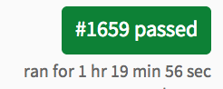
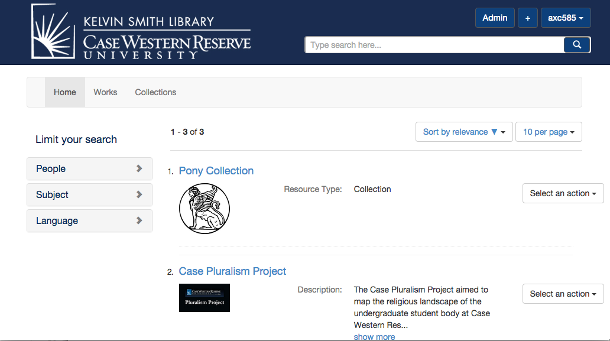

Worthwhile: A tour
Justin Coyne
Data Curation Experts
What is Worthwhile?
- Rails engine stand up a fully functioning repository
- Evolution of Curate/Sufia
Q: Why leave Curate?
A: Complexity
- DOI
- Several pre-built models
- Linked-creators
Q: Why leave Curate?
A: Tests were too slow
Q: Why leave Curate?
A: Community is too conservative for rapid change.
- Too many parties with an investment in the software
- Too few people with the power to review/merge pull requests
- Lack of communication about the boundaries
- We didn't take the time to get very involved in steering
- Our velocity on the Case project was too low
Q: Why leave Curate?
A: Old versions of dependencies
- Based on Hydra 6, Blacklight 4, Bootstrap 2
Solutions
- Borrow heavily from Curate
- Cut out all the different work types, DOI, Linked Contributors
- Get out of the community process until we have something stable
- Upgrade all the dependencies
- Utilize Sufia better
Demo Case Digital Library
Now it's your turn
Prerequisites
$ rails --version
Rails 4.1.6Installing
$ rails new worthwhile_demo
$ cd worthwhile_demoAdd the gem
Open Gemfile and add these lines
gem 'worthwhile'Save the file and quit the editor. On the command line type:
$ bundle installWhen this is complete you should see:
...
Your bundle is complete!
Use `bundle show [gemname]` to see where a bundled gem is installed.
Run the generator
$ rails generate worthwhile:installIf you've already downloaded jettywrapper move the v7.0.0.zip file into tmp/
Get a test Jetty with Fedora/Solr
$ rake jetty:unzip jetty:configStart Jetty
$ rake jetty:startRun the database migrations
$ rake db:migrateStart the server
$ rails serverStart the background workers
$ TERM_CHILD=1 QUEUE=* rake resque:workMake a custom work type
- Model
- Actor
- Controller
- Views (Optional)
Custom Model
- Model
- Actor
- Controller
- Views (Optional)